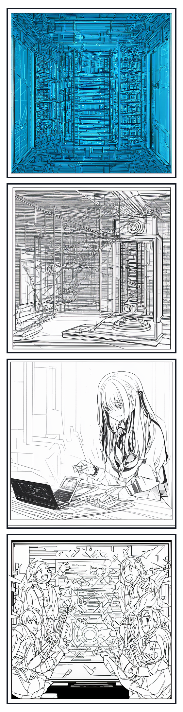
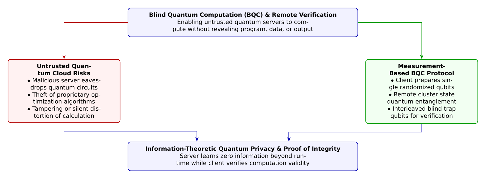

🎨 4コマ漫画挿絵（文字なし）
AI高解像度生成
▲ 【挿絵】青葉台高校 情報科学部＆帝都科学大学サイバーディフェンス・ラボでの実践シーン
📖 小説本文
### 1. 量子クラウドの甘い罠
「悠真先輩、これを見てください……！」 夕暮れのSPIRAL研究室で、白石結衣がノートPCを悠真の方へ向けた。
画面には、海外の大手量子クラウドサービスが公開した超伝導128量子ビットQPU（量子プロセッサ）の実行ログが表示されていた。 「製薬研究所から委託された新薬分子の基底エネルギー探索アルゴリズム（VQE: 変分量子固有値ソルバー）の実行ジョブなんですが……サーバー側の量子回路トランスパイル履歴に、不審なシャドウ測定ゲートが挿入されていた形跡があります」
「量子回路の盗聴か」 悠真が険しい表情を浮かべた。 「どれほど強力な量子コンピュータであっても、冷却装置や希釈冷凍機を抱えた巨大システムはクラウド経由で利用するのが現実的だ。しかし、クライアントが量子プログラムや初期パラメータをそのままサーバーへ送信すれば、量子アルゴリズムの特許技術や機密データはサーバー管理者やホスティング業者に丸裸で奪われてしまう」
葵が眉をひそめた。 「でも、暗号化したまま計算できる同型暗号（FHE）は、古典コンピュータ向けですよね？ 量子重ね合わせ状態のデータそのものを、サーバーに秘密を明かさず計算させることなんてできるの？」
「できるよ、葵ちゃん」 結衣が微笑みながらメガネを正した。 「それこそが、量子力学の基本原理そのものを暗号プロトコルに組み込んだ究極の秘密計算——『ブラインド量子計算（Blind Quantum Computation: BQC）』です」
---
### 2. 測定型量子計算（MBQC）の幾何学
悠真はホワイトボードに、格子状に結ばれた複数の量子ビットのグラフを描いた。
「通常の量子ゲート方式ではなく、アハロノフやブロードベントらが提唱した『測定型量子計算（MBQC: Measurement-Based Quantum Computing）』をベースにするんだ。 クライアントは、高価な量子コンピュータを持っている必要はない。単一の偏光光子を生成できる安価な弱コヒーレント光源と位相変調器さえあればいい」
悠真はプロトコルの基本構造を解説した。 1. **準備フェーズ**: クライアントは、ランダムな位相角 $\theta \in \{0, \pi/4, \pi/2, \dots, 7\pi/4\}$ で変調した単一量子ビット $|\psi(\theta)\rangle = \frac{1}{\sqrt{2}}(|0\rangle + e^{i\theta}|1\rangle)$ を順次サーバーへ送信する。 2. **クラスタ状態生成**: サーバーは受信した量子ビット同士に制御Zゲート（CZ）を適用し、巨大なエンタングルメント状態（2次元クラスタ状態）を構築する。 3. **対話型測定フェーズ**: クライアントは、本来実行したいアルゴリズムの計算角 $\phi$ に自身の秘密乱数 $\theta$ を加算した測定角 $\phi' = \phi + \theta + r\pi$ をサーバーに指示する。
「サーバーは指示された角度で光子を射影測定し、その結果（0か1）をクライアントへ返すだけだ」 結衣が付け加えた。 「サーバーから見れば、測定角 $\phi'$ は完全にランダムな値にしか見えない。量子ビットの量子状態も、実行されているアルゴリズムの意図も、計算の入出力も、物理法則（情報理論的安全性）によって1ビットたりともサーバーには知覚できないのよ」
---
### 3. トラップ量子ビットによる完全検証（Verifiable BQC）
「でも、もしサーバーが悪意を持って、計算をサボったり、測定結果を偽造して返してきたらどうするんですか？」 蓮が鋭く指摘した。
「それを見破るのが『トラップ量子ビット（Trap Qubits）』だ」 悠真の口元に笑みが浮かんだ。 「クラスタ状態の中に、あらかじめダミーの独立した量子ビット（トラップ）をランダムに忍ばせておく。トラップビットは特定の測定を行えば、理論上必ず『0』が得られることがクライアント側にだけ分かっている。 もしサーバーが正しく指示通り測定していれば、トラップの測定結果は100%パスする。しかし、サーバーが勝手に回路を変更したり誤った測定を行えば、重ね合わせが崩れてトラップが発火し、即座に不正が証明されるんだ」
蓮が感嘆の声を上げた。 「なるほど！ 秘密を完全に秘匿したまま（Blindness）、計算の正当性まで数学的に検証できる（Verifiability）わけですね！」
---
### 4. 拓かれた量子主権
結衣はクライアント側の位相制御スクリプトを走らせ、遠隔の量子テストベッドサーバーに向けてランダム偏光光子パルスを送出し始めた。
「光ファイバリンク確立……クラスタ状態のエンタングルメント忠実度（Fidelity）99.4%。ブラインド測定プロトコルを開始します」
ターミナル上に対話的な測定ラウンドが超高速で進行していく。サーバー側からは何の意味も持たないランダムなビット列が返ってくるが、結衣のローカル端末で秘密乱数 $\theta$ によるワンタイムパッド復号が行われると、綺麗な分子基底エネルギーの収束曲線が浮かび上がった。
「トラップ検証、1000回連続成功！ 改ざんゼロ、情報漏洩ゼロの完全秘匿量子計算を達成しました！」 ラボ内に拍手が湧き起こる。
「量子超越の時代が来ても、プライバシーとセキュリティは決して失われない」 夜空を見上げる葵たちの眼差しには、次世代の計算パラダイムを支える確固たる誇りが宿っていた。
📊 セキュリティ構造図解 (TikZ LuaLaTeX生成)
国家安全基準・工学図解
▲ 【技術構造図】IPAデジタルスキル標準・国際規格に準拠した仕組みのモデル化